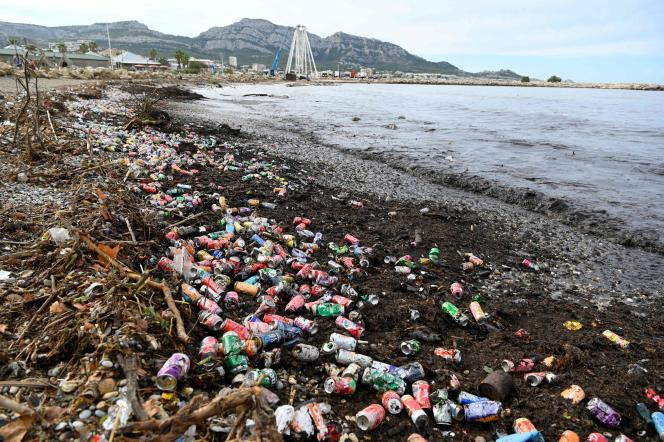

Les causes de cette pollution.
Les pricipales causes sont:
- L'achat de plastiques
- Le manque de recyclage
- Le rejet des déchets dans la nature
- L'absence de politiques durables et écologiques
Toutes ces choses qui nous empêchent d'éliminer le plastique comme il le faudrait.
